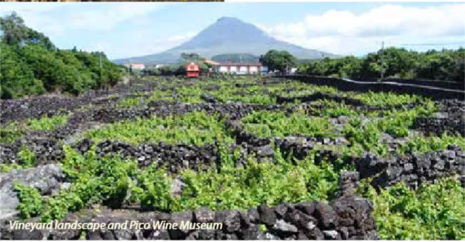

Chapter 4 · The Portuguese wine regions
Açores Wine Region
Key figures (2022)
Viticultural area: 1,708 ha
Total Production: 4,487 hl (2020/21)
Average yield: 1,400 litres/ha
History
The occupation of these islands began between 700 and 850 CE, 700 years earlier than suggested by documentary sources. After the discovery of the Atlantic archipelago during the reign of King Afonso V, his uncle, Henry the Navigator, ordered the uprooting of vines on the island of Crete so that they could be acclimatised first to Madeira, and then to the Azores. The motive was to capture the important Greek liqueur wine market, thus taking advantage of the position of these islands and the international sailing routes of ships crossing the Atlantic. Planted in corrals to protect the vines from the wind, the vineyards flourished. At the beginning of the 16th century, the Carmelite and Franciscan monks successfully perfected their vitivinicultural techniques. In the 19th century, the level of exports had grown to 20,000 pipes and vineyards covered an area of over 2,000 hectares. Contact with the Hanseatic League, exports via their own “feitoria” (trading post) to Brazil, not to mention business with England and Russia, where Pico wine was considered to be the wine of Tsars, revealed outstanding commercial organisation. Starting in 1852, the American Plagues destroyed viticulture. The quality and prestige of the wines of the Azores has been acknowledged for a long time and is the primary reason for three of them 0150 – Pico, Graciosa and Biscoitos – to have received DOC (Denominação de Origem Controlada—Controlled Denomination of Origin) certification.

Região vitivinícola IGP Açores DOP Graciosa DOP Biscoitos DOP Pico
Terroir
Source: https://www.europarl.europa.eu/ RegData/etudes/STUD/2015/567667/IPOL_ STU(2015)567667_EN.pdf
The archipelago, which is of volcanic origin, is situated at the crux of three of the largest tectonic plates. The Pico volcano, on the island of the same name, is the highest mountain in Portugal (2,352 m above sea level). The warm Gulf Stream maintains the average temperature of the sea water at between 16 °C and 25 °C. The climate is characterised by regular rainfall throughout the year (1,930 mm), with heavier rainfall in autumn and winter, and a short summer period (July–August), with variations in temperature caused by regular meteorological phenomena such as storms, strong winds, and torrential rain of a catastrophic nature. The soils of the Azores are of relatively recent volcanic origin, quite shallow, and made up of basaltic rocks, trachytes, andesites and argillaceous formations, making them quite different from terroirs on mainland Portugal. The soil is artificially improved by the addition of volcanic ash known locally as “bagacinho”.
Climate: The Azores are surrounded by the Atlantic Ocean with influence of a maritime climate. This climate is characterized by strong winds, but also by mild temperatures with a low daily and annual temperature range, rainfall and generally high relative humidity. The drier area to the west of munt Pico (Madalena and Criação Velha) was and is currently the most favourable area for viticulture. The frontal precipitation is reinforced by orographic precipitation in the interior of the island (DREPA 13/88). The climatic situation is conditioned by the use of currais – corrals – because the way the stone walls (usually 1 meter high) are structured shelters the vines from the wind and salt, and also helps to retain some heat thus acting as a kind of greenhouse.

Köppen-Geiger classification: The climate corresponds to climatic group C (temperate climate) (Csb and Cfb) which means a temperate rainy climate with dry summers and a temperate rainy climate, humid in all seasons with medium average temperatures.
Average temperatures sit comfortably at about 13 °C (55 °F) in the winter, and 24°C (75 °F) in the summer. Daytime temperatures normally fluctuate between 14 °C (57 °F) and 25 °C (77 °F) depending on the season. Temperatures above 30 °C (86 °F) or below 7 °C (45 °F) are largely unknown, but due to the high level of humidity (70%–80%) it can feel hotter in the summer and colder in the winter.
Average annual rainfall The rainfall is below 800 millimetres (30 inches) per year on the island of Santa Maria (the south eastern most island); whereas it is above 900 mm (35 in) in São Miguel. Further west, on Terceira Island, rainfall often exceeds 1,000 mm (40 in) per year. In the summer months, from June to August, rain is less likely, but rain showers still occur for an average of 5–7 days per month. Generally the months of September to March account for 75% of the total annual rainfall.
In terms of sunshine, the islands have a low index, averaging around 35 per cent per year. This translates into approximately 1,600 hours of sunshine a year because of the clouds, since from October to April the skies are often cloudier and the days are generally a mixture of sunshine and rain.
The wind, one of the vine's greatest enemies, predominates on the island of Pico coming from the west/ south-west quadrant. Hardly a year goes by without wind gusts of more than 100 kilometres per hour being experienced.
Geology and soil science:
The archipelago of the Azores is situated in the middle of the Atlantic Ocean between the latitudes of 37° and 39.5° north, some 1,600 kilometres from the coast of mainland Portugal. Of the nine islands that make up the Azores, three support vineyard cultivation.They are: Terceira, Pico and Graciosa. Their unusual soil type is markedly different from the soils found on the mainland.
Two types of soil predominate: The lajido consists primarily of unaltered mantles of bedrock, while the biscoitos is more weathered and has a layer of disaggregated volcanic slag. On new plantations, the soil is artificially improved with the addition of volcanic ash known locally as “bagacinho”. Located within the contact zone of the North American, Eurasian and African tectonic plates, the Azores is of relatively recent volcanic origin, andesites and argillaceous formations. Old vineyards protected by corrals are located on extremely thin soils, or sometimes even non-existent soil, with vines growing directly in fissures in the rocky volcanic substrate where other agricultural crops would normally find it very difficult to grow. This is the case with lajido and biscoitos soils. As for the chemical profile of the Pico soils, the phosphorus and copper values are higher and the organic matter values are lower, with a medium amount of potassium, and high levels of manganese and very high levels of iron, zinc and boron (UTAD analysis).
Vineyard elevation: Traditionally, the corral vineyards are planted right on the coast and extend inland to an elevation of 200 metres (Source: Ribeiro, A. (2021). O perfil de aminoácidos de vinhos das castas autóctones dos Açores: Arinto dos Açores, Verdelho e Terrantez do Pico [Master's thesis, Universidade de Évora]. Repositório Científico da Universidade de Évora. http://hdl.handle.net/10174/29827)
Types of wine produced
Açores IG wines or Açores regional
wines: Red and white Biscoitos DO and Pico DO wines (VLQPR): liqueur white
Graciosa DO wine: White.
Regional contacts
Technical information: Comissão Vitivinícola dos Azores (Vitivinicultural Commission of the Azores) Av. Machado Serpa, 9950-321 MADALENA Pico, TEL.: 292 623 605/6,
Enotourism information: The Azores Wine Route. www.vitiviniculturaatlantica.com, Portal Turismo Açores (The Azores tourism portal): www.azorestourism.com Cultural information on the wine
of the region: Confraria do Vinho do Pico (Pico Wine Confraternity), Gabinete Técnico da Paisagem da Cultura da Vinha da Ilha do Pico, GTPCVIP (Pico Island Vineyard Landscape Technical Office) – a service of the Pico Nature Park, Museu do Vinho dos Biscoitos (Biscoitos Wine Museum), Canada do Caldeiro, 9760-051 BISCOITOS, Praia da Vitória, Terceira Island; Tel.: 965 667 324,
Website: www.casaagricolabrum.com; Museu do Vinho do Pico (Pico Wine Museum), Rua do Carmo Toledo, 9950-364 MADALENA, Pico, Pico Island, Tel.: 292 672 276. Institutions of higher learning and
viticultural research: Universidade dos Açores (University of the Azores), Angra do Heroísmo Campus, Rua Capitão João d’Ávlia – Pico da Urze, 9700-042 ANGRA DO HEROÍSMO, Açores, Portugal. Tel.: 295 402 200.
Certification authority: Comissão Vitivinícola dos Azores (Vitivinicultural Commission of the Azores) Av. Machado Serpa (Edifício do Serviço de Desenvolvimento Agrário do Pico) 606 – Tel.: 292 623 605/6, 9950-321 MADALENA, Pico, e-mail: info@cvracores.pt
Producer and bottler information:
http://www.ivv.min-agricultura.pt/ np4/1736.html, Yearbook, p. 266.
Botany (biodiversity features) and authorised varieties
Legal basis: Ministerial Order N.º 853/2004, Reg. (EC) 1493/99.
Red wines: Agronómica, Aragonez (Tinta Roriz), Cabernet-Franc, Cabernet Sauvignon, Castelão (Periquita), Complexa, Merlot, Pinot Noir, Rufete, Saborinho, Tinta Barroca, Touriga Franca, Touriga Nacional, Vinhão and Gewurztraminer.
White wines: Arinto (Pedernã), Bical, Chardonnay, Fernão Pires (Maria Gomes), Galego Dourado, Generosa, Gouveio, Malvasia, Malvasia Fina, Moscatel Graúdo, Riesling, Rio Grande, Seara Nova, Sercial (Esgana Cão), Tália, Terrantez, Verdelho and Viosinho. Arinto de Pico

Prestigious wineries
in the region:
The market for regional consumption and passing trade was recovered by the American hybrid vines until a few years ago. When initial rebuilding of viticulture and viniculture took place, however, heliothermal properties were obviously not properly taken into account when selecting new grapevine varieties which had to adapt to different growing conditions; neither was the necessity to replace the corrals with other types of windbreaks understood. Thus, lamentably, the restructuring did not result in the desired outcome. While interesting wines such as Biscoitos and Graciosa were produced, yields were lower. Nevertheless, the Cooperativa de Pico (“Pico Cooperative”) labels and the innovative wines of the Curral de Atlantis winery have shown that there may well be a future for the famous wines of the Azores. Others involved in viticulture take advantage of subsidies granted to maintain traditional viticulture in corrals, although this is not economically sustainable, or they are replanting the Jacquez or Cunningham hybrids. Cooperativa Vitivinícola da Ilha do Pico (CVIP) – Picowines C.R.L.

The oldest wine producer in the Azores, founded in 1949 through the efforts of producers trying to recover the noble grape varieties and the cultivation of vines in stone corrals, which today constitute a landscape classified as a UNESCO World Heritage Site. It has 280 members and produces half a million litres of wine. The cooperative is trying to recover the noble grape varieties and the cultivation of vines in stone corrals, which is now a UNESCO World Heritage Site, and is subsidised by a funds that allows it to survive. Azores Wine Company This joint venture, a project driven by multi-award-winning winemaker, António Maçanita, has its own vineyards on volcanic soil on the north-western slope of Pico Island in Criação Velha, as well as a recently built winery, and restaurant and hotel-facilities. The old vines of the ancestral vineyard are largely the autochthonous Arinto dos Açores (>95%). It is planted in small plots of 0.89 hectares, 0.6ha and 1.4ha. By 2020, the Azores Wine Company had brought 1,000 hectares of vines to life. This is an achievement, but it represents just over 15% of the area that was once under vineyard cultivation on the island. The company focuses on vineyards in currais (wind-protected stone-wall corrals) and uses the traditional grape varieties cultivated in the great days of Pico wine in the 18th century.
Curral de Atlantis – Sociedade Vitivinícola, Lda.
This company was set up by Jorge Böhm and Manuel Faria on Pico Island in 1995. The initial objective was to study the oenological capacity of 24 different, primarily autochthonous, grape varieties, in collaboration with the University of Évora and oenologist Paulo Laureano. Today, the company belongs to the Faria family, and currently has 42 hectares of production sold on the islands and in various EU countries. Adega Cooperativa Dos Biscoitos was founded in 1999 in the parish of Biscoitos on Terceira Island. It currently has 60 members.
Casa Agrícola Brum, Lda – Terceira Island. Adega Cooperativa da Graciosa e Terra do Conde
Adega Czar – Sociedade Unipessoal, Lda.